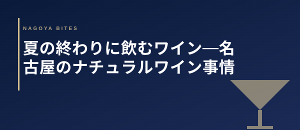

🍽 グルメ考察
夏の終わりに飲むワイン — 名古屋のナチュラルワイン事情
8月の後半、日が落ちるのが少し早くなった夕刻に飲むワインは格別だ。夏の疲れを労うように、秋を予感させる一杯を選ぶ——名古屋のナチュラルワインシーンを、業界人の目で整理した。

01 — Seasonal Shift in Wine
夏から秋へ——ワインの選び方が変わる時期
8月後半は、ワイン選びの転換点だ。猛暑の盛りには冷えた白・ロゼ・スパークリングを求めていた体が、少し落ち着いてくる。夕風に秋の気配が混じると、飲みたいワインが変わる。フレッシュな酸より、少しだけ複雑さのある味わいへ。軽い辛口白より、果実の凝縮感がある赤へ。この「移行期」に飲むナチュラルワインは、生産者が意図しなかった豊かさを持っていることが多い。
ナチュラルワインは、添加物を最小限に抑えることで、ブドウ本来の季節感が直接グラスに映る。つまり、8月末のナチュラルワインは、ある意味で「去りゆく夏のアーカイブ」だ。その年の天候・気温・生産者の判断——すべてがそのワインに封じ込められている。飲む行為は、産地の夏を追体験することに近い。
02 — Nagoya Natural Wine Landscape
名古屋のナチュラルワインシーン：現在地
名古屋のナチュラルワインシーンは、2020年代に入って急速に成熟した。栄・伏見・今池エリアを中心に、「ナチュラルワインだけを扱う」を宣言した小さな専門店・バーが増えた。これらの店は、インポーターとの直接関係を持ち、大手流通に乗らない希少ロットを仕入れる。常連客との会話の中でワインを選ぶスタイルが、名古屋のこの層の店に共通する文化だ。
飲食業界の観点から評価すると、名古屋のナチュラルワインの特徴は「食事との本気のペアリング」にある。単に「自然派を出す店」ではなく、料理の素材・調理法・出す順番に合わせてワインリストを設計している店が増えた。このレベルの店は予約制が多く、一見客に向けた宣伝をほとんどしない。情報はすべて口コミと業界内の紹介で動いている。
ナチュラルワインを出す側の正直な課題は、保管コストと温度管理だ。添加物が少ないナチュラルワインは、コンベンショナルより繊細に温度変化を受ける。名古屋の夏は高温多湿で、輸送・保管の過程でワインがダメージを受けやすい。本当に良いナチュラルワインを出す店は、この問題に真剣に向き合い、専用セラーを持ち、輸送条件を仕入れ先と交渉している。「ナチュラルワインが増えた」という言葉の裏には、この品質管理の格差が隠れている。
03 — Selection Guide
夏の終わりに選ぶナチュラルワイン：スタイル別ガイド
| スタイル | 8月後半の適合度 | 名古屋の食との相性 | 選ぶ場面 |
|---|---|---|---|
| オレンジワイン | ◎ 最適 | 手羽先・焼き鳥・貝類 | 夕暮れの一杯、料理との架け橋として |
| 軽やかな赤（ガメイ系） | ◎ 移行期に最適 | 鶏・豚の軽い調理 | 冷やして飲む「赤」として夏を締める |
| スパークリング（ペティアン） | ○ まだ現役 | 刺身・魚介・揚げ物 | 乾杯の一杯として。夏の名残を楽しむ |
| 重めの赤（シラー・カベルネ） | △ 少し早い | 牛肉・赤身の料理 | 9月以降に向けた「秋の予告編」として |
| 甘口・デザートワイン | ○ 旬 | 季節のフルーツ・和菓子 | 食後に秋の気配を感じたいとき |